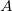
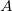

3.5 Specify a Polymorphic Theorem
A polymorphic theorem is no different, in principle, from theorems defined in contexts and machines. The Theory plug-in, however, provides facilities to instantiate and use these theorems in proofs. See the example below.
The previous theorem articulates the fact the sequences as specified in our example are finite. As with theorems in contexts and machines, you have to prove validity and well-definedness of the theorem. The proof obligations associated with a theorem are the following:
./S-THM the validity proof obligation.
./WD-THM the well-definedness proof obligation.
The following figure shows other theorems that can be defined in relation to our theory of sequences so far:
 A theorem can be instantiated (e.g., in the previous example, the type parameter  can be substituted with a type expression that is acceptable in the context of the sequent under consideration). We will later show how this is achieved.
A theorem can be instantiated (e.g., in the previous example, the type parameter  can be substituted with a type expression that is acceptable in the context of the sequent under consideration). We will later show how this is achieved.